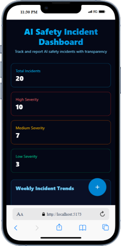

AI Safety Incident Dashboard
A responsive web application for tracking and reporting AI safety
incidents with transparency and ease.
🔗 Live Demo
View Live Project
🔗 Github Repository
View Github repository
Table of Contents
Features
-
🚨 Incident Management
- Report new AI safety incidents
- View and expand incident details
- Sort by newest/oldest reports
-
🔠Advanced Filtering
- Filter by severity level (Low, Medium, High)
- Search by title or description
-
Highlighted search results for better visibility
when searched text is found in the list
-
📱 Responsive Design
- Mobile-friendly interface
- Desktop-optimized layout
-
✨ Interactive UI
- Smooth animations with Framer Motion
- Floating action button on mobile
- Click-outside to close functionality
-
📊 Data Visualization
- Clear incident severity indicators
- Organized list view
Device Screenshots
Mobile Phones
|  |
 |
 |
Laptops

Tablets
Technologies Used
-
Frontend: React (TypeScript), Tailwind CSS, Framer
Motion
- Build Tools: Vite, npm
Project Setup
Before you begin, ensure you have the following installed:
Installation
-
Clone the repository:
git clone https://github.com/sanketyelugotla/SparkleHood.git
cd SparkleHood
-
Install dependencies:
npm install
-
Start the development server:
npm run dev
-
After the server starts, you can open the app in your browser at
http://localhost:5173
-
The project should automatically open in your default web browser.
-
If it does not, manually open the browser and go to
http://localhost:5173
Project Structure
SparkleHood/
├── src/
│ ├── components/ # React components
│ │ ├── IncidentFilter.tsx # For filtering and sorting
│ │ ├── IncidentForm.tsx # For for adding a new incident
│ │ ├── IncidentList.tsx # For displaying incidents
│ │ ├── IncidentCard.tsx # Card for individual incident
│ │ └── CustomSelect.tsx # Custom dropdown component
│ ├── data/ # Mock data
│ │ └── mockData.ts # Mock data of incidents
│ ├── types/ # TypeScript types
│ │ └── incident.ts # Data types of incident
│ └── App.tsx # Main application
├── public/ # Static assets
├── package.json
└── README.md
Usage
Viewing Incidents
- Scroll through the chronological list of reported incidents
- Click any incident card to expand/collapse detailed description
- Use filters to quickly locate specific incidents
Reporting New Incidents
Desktop Experience
- Persistent form panel in the right sidebar
- Real-time validation for all form fields
Mobile Experience
- Floating action button (+) in bottom-right corner
- Smooth circular reveal animation from button
- Optimized vertical layout for touch input
Filtering & Sorting
Severity Levels
- Three-tiered classification (Low/Medium/High)
- Visual color-coding for quick identification
Sorting Options
- Chronological (Newest first)
- Reverse chronological (Oldest first)
Search Functionality
- Full-text search across titles and descriptions
- Case-insensitive matching
Customization
Visual Styling
- Modify Tailwind CSS classes in component files
-
Adjust color palette in
@theme inside
index.css
- Update animation durations in Framer Motion components
Data Management
- Edit
src/data/mockData.ts to modify sample incidents
- Adjust default form values in
IncidentForm.tsx
Feature Expansion
- Replace mock data fetches with real API calls
- Add loading/error states for network requests
- Implement new filter categories (status, date ranges)
- Add multi-select filtering capabilities